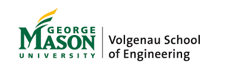

Because Mason Engineering is located in the heart of one of the East Coast's most active tech corridors, our undergraduate and graduate students have unparalleled access to the nation's top innovators. Elite science and technology organizations recognize our faculty as leaders in their fields. Professors bring industry knowledge to the classroom, challenging students to push the boundaries of research, skill, and application based on real-time knowledge of marketplace demand. Employers know a candidate with a degree from Volgenau will have skills that are up-to-date and highly valued.
The Carnegie Classification of Institutions of Higher Education ranks Mason among the highest research institutions in the country, with total research expenditures growing from $77 million in 2008-09 to $99 million in 2013-14. Mason's reclassification to an R1 university was driven by growth in resources devoted to science and engineering, which doubled. Mason, the largest public research university in Virginia, also increased the number of doctoral degrees it conferred by 27 percent.
Mason Engineering researchers are at the forefront of exploration and study in a number of significant areas. From our roots in information and communication technology engineering, we are building inroads into uncharted territories of a future that is more efficient, safer, healthier, and more prosperous.
Air transportation management. As a center of excellence in operations research (NEXTOR), our work is staying ahead of the challenge of coordinating an increasingly crowded sky. Information and network assurance. We are planning for the next big network hack, and building defenses to protect you, your business, and our national communications systems from attack.
Welcome to the Volgenau School of Engineering at George Mason University website. Engineering has never been more relevant or more necessary than it is in todays world. From developing sustainable solutions, creating new medical technologies, fighting climate change, or designing technologies for protecting and improving the wellbeing of people, engineers are leaders in advancing society. The Volgenau School of Engineering offers a relevant array of programs that equip students with deep technical knowledge, combined with a broad understanding of the environmental and societal contexts of their engineering solutions. Through our programs, our students develop as critical thinkers and innovators, with the strong collaboration skills and global perspective that prepare them to solve the complex engineering problems of the future.